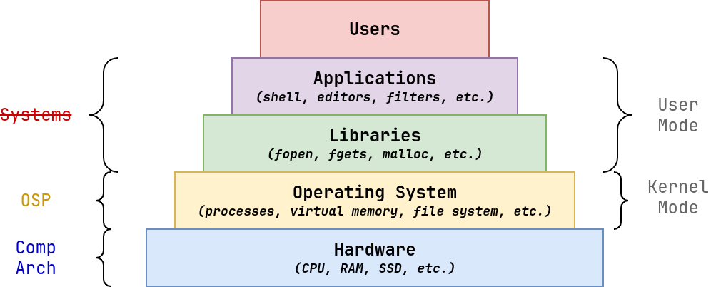
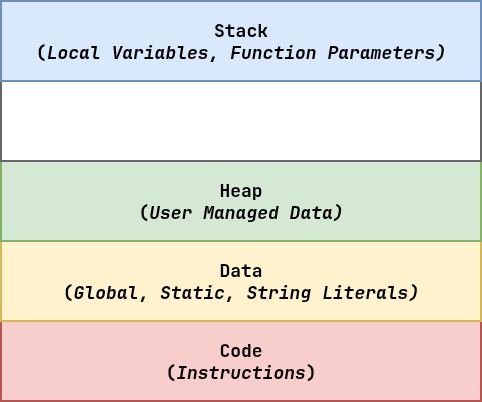
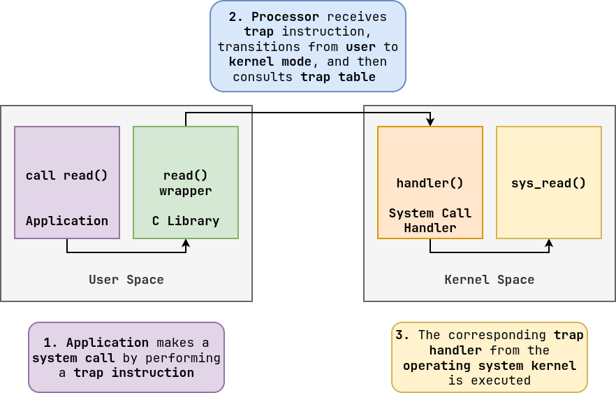

Review¶
-
What is an operating system?
-
Taxonomy: (purpose)
-
Structure: (monolithic vs microkernel)
Three big themes of operating systems.
-
Virtualization: Abstract hardware (eg. processes -> CPU)
-
Concurrency: Multiple things happen at once... race conditions
-
Persistence: Ensure data remains available
System Calls: How applications interact with the operating system.
Review: House of Cards¶

System Call: Overview¶
A system call occurs when a user application requests a service or resource from the operating system kernel.
I/O open, read, write, close, lseek File stat, chmod, chown, unlink Directory opendir, readdir, closedir To track the system calls made by an application, we can use: strace.
$ strace chmod -x hello # Thin wrapper $ strace ls # More complex wrapperTo see API definitions of system calls, look at:
/usr/include/bits/syscall.h/usr/include/asm/unistd_{32,64}.h
$ grep -R waitpid /usr/include # Search for waitpid numberSystem Call: Demonstration¶
/* hello.c */ #include <stdlib.h> #include <unistd.h> int main() { // man 2 write write(STDOUT_FILENO, "hello, world\n", 13); exit(0); }.section .data string: .ascii "hello, world\n" string_end: .equ len, string_end - string .section .text .globl main main: # write(1, "hello, world\n", 13) movl $4, %eax # System call number 4 movl $1, %ebx # stdout has file descriptor 1 movl $string, %ecx # hello, world string movl $len, %edx # string length int $0x80 # Trap # exit(0) movl $1, %eax # System call number 1 movl $0, %ebx # Argument is 0 int $0x80 # TrapTo request system call:
-
Record system call number in appropriate register.
-
Record argument(s) in appropriate register(s).
-
Trigger the interrupt / trap.
$ strace ./hello-asm # Doesn't work b/c it's 32-bit!!!.section .data string: .ascii "hello, world\n" string_end: .equ len, string_end - string .section .text .globl main main: # write(1, "hello, world\n", 13) mov $1, %rax # System call number 1 (write) mov $1, %rdi # file descriptor 1 (stdout) mov $string, %rsi # string content mov $len, %rdx # string length syscall # Trap / Interrupt # exit(0) mov $60, %rax # System call 60 (exit) mov $0, %rdi # exit status syscall # Trap / Interrupt-
64-bit version uses syscall mechanism instead of int.
-
64-bit version uses different registers
-
64-bit version has different syscall numbers!!!
System Call: Address Space¶

Program is an image of memory layout!
System Call: User vs Kernel Mode¶
An interrupt, trap, or exception is an event that forces the processor to transition from user mode to kernel mode.
System Call: Processor Events¶
A variety of events or exceptions can cause a transition from user mode to kernel mode:
Class Cause Async/Sync Return Behavior Interrupt Signal from I/O device Async Always return to next instruction Trap Intentional exception Sync Always return to next instruction Fault Potentially recoverable error Sync Might return to next instruction Abort Nonrecoverable error Sync Never returns When these events, the processor consults the interrupt vector table or trap table to determine what to do next (what handler code to execute).
System Call: Skit¶
-
Kernel registers handlers in trap table.
-
User process:
-
Records system call number
-
Records arguments
-
Triggers trap
-
-
Processor uses trap table to select handler.
-
Kernel performs handler.
# Syscall 1 read(n)
Read passage2 write(s, n)
Write passage3 kill(pid, sig)
Send signal to process4 exit(status)
Terminate processSystem Call: Traps¶
To perform a system call, a user application performs a trap to interrupt the processor and force it to look up the appropriate handler function in the trap table.

The trap table is loaded during boot by the kernel, which registers which handler functions to execute based on the system call number.
Reading 02: sha1sum¶
int main(int argc, char *argv[]) { int failures = 0; /* For each argument, compute sha1sum and display result */ for (int i = 1; i < argc; i++) { char cksum[SHA_DIGEST_LENGTH*2 + 1]; if (!sha1sum_file(argv[i], cksum)) { fprintf(stderr, "Unable to compute checksum for %s\n", argv[i]); failures++; continue; } printf("%s %s\n", cksum, argv[i]); } return failures; }bool sha1sum_file(const char *path, char *cksum) { bool result = false; EVP_MD_CTX *ctx = NULL; /* Open file reading */ int rfd = open(path, O_RDONLY); if (rfd < 0) { // Must check if system call fails! goto failure; // Use goto to centralize cleanup } /* Create and initialize context */ ctx = EVP_MD_CTX_new(); if (!ctx || !EVP_DigestInit_ex(ctx, EVP_sha1(), NULL)) { goto failure; } /* Read data into buffer and update context */ char buffer[BUFSIZ]; // Allocate buffer to store partial ssize_t nread = 0; // contents of file while ((nread = read(rfd, buffer, BUFSIZ)) > 0) { if (!EVP_DigestUpdate(ctx, buffer, nread)) { goto failure; // Read partial contents of file } // into buffer and update digest } if (nread < 0) { goto failure; } /* Compute SHA1 */ uint8_t digest[SHA_DIGEST_LENGTH]; if (!EVP_DigestFinal_ex(ctx, digest, NULL)) { goto failure; // Compute SHA1 on buffer } /* Convert digest to hexadecimal digest */ for (int b = 0; b < SHA_DIGEST_LENGTH; b++) { snprintf(cksum + 2*b, 3, "%02x", digest[b]); // Convert raw bytes into ASCII } // hexadecimal representation result = true; failure: /* Clean up */ if (rfd >= 0) close(rfd); if (ctx) EVP_MD_CTX_free(ctx); return result; // Need -lcrypto when linking } -